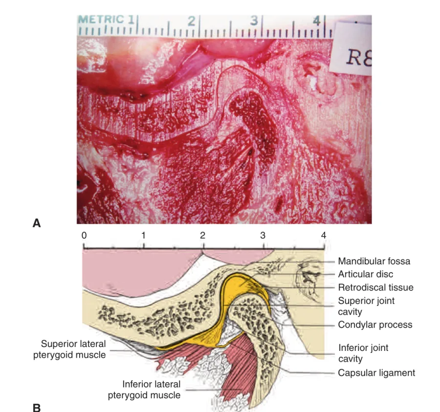

نسخه استخراجشده؛ ترجمه یا تأیید علمی انجام نشده است. وضعیت: captured
مفصل گیجگاهی-فکی را ژینگلیمو-آرترودیال مینامند — یعنی «قادر به هر دو نوع مفصلبندی لولایی و لغزشی». همین دو کلمه، کل بیومکانیک این یونیت را در خود دارد.
اجزای اصلی: قاعدهی جمجمه، مندیبل، و عضلات مضغی با عصبرسانی و خونرسانیشان. یک دیسک مفصلی، حفرهی گلنوئید و توبرکل مفصلی استخوان تمپورال را از زائدهی کندیل جدا میکند.
و حالا تفاوتی که این مفصل را از بقیهی مفاصل بدن جدا میکند: سطوح مفصلی کندیل و حفره «با بافت فیبروزی بیعروق پوشیده شدهاند — برخلاف بیشتر مفاصل دیگر که غضروف هیالین دارند».
خود دیسک از بافت همبند متراکم ساخته شده و در ناحیهای که مفصلبندی بهطور طبیعی رخ میدهد، بیعروق و بدون عصب است.
ولی درست پشتش، همهچیز عوض میشود. دیسک در خلف به بافت همبند سست، بهشدت پرعروق و پرعصب میچسبد: پد رترودیسکال یا ناحیهی بیلامینار — و «بیلامینار» نامیده میشود چون از دو لایه ساخته شده: یک لایهی فوقانی الاستیک و یک لایهی تحتانی کلاژنی و غیرالاستیک.
این تقابل، منشأ درد را توضیح میدهد: جایی که ساییده میشود عصب ندارد، و جایی که عصب دارد قرار نیست ساییده شود. وقتی دیسک جابهجا شود، کندیل روی همان بافت پرعصب مینشیند.
اتصالات دیسک: در مدیال و لترال محکم به قطبهای کندیل چسبیده، در قدام با کپسول و عضلهی پتریگوئید خارجی فوقانی جوش خورده. بالا و پایین دیسک، دو فضای سینوویال فوقانی و تحتانی قرار دارند که با غشای سینوویال احاطه و از مایع سینوویال پر شدهاند.
و پیامد مکانیکی این اتصالات: «به دلیل اتصال محکم به قطبهای هر کندیل، دیسک هم در لولا شدن و هم در ترانسلیشن حرکت کندیل را دنبال میکند» — و آنچه این دنبال کردن را ممکن میسازد، اتصال سستِ بافت همبند خلفی است.
سه رباط زوج، و کاری که هرکدام محدود میکند:
یک نکتهی مکانیکی پایه: «رباطها نمیتوانند بهطور معنادار کشیده شوند و بنابراین حرکت مفصل محدود میشود.» رباط، فنر نیست؛ سیم بکسل است.

عضلات دو گروهاند: عضلات مضغی شامل تمپورال، ماستر، و پتریگوئید داخلی و خارجی، و عضلات فوقهایوئید شامل ژنیوهایوئید، مایلوهایوئید و دیگاستریک.
سه عضلهی زوج، بالا بردن و حرکت لترال را میسازند: تمپورال، ماستر و پتریگوئید داخلی.
و حالا مهمترین تفکیک این درس — پتریگوئید خارجی یک عضله نیست، دو عضله است. «هر پتریگوئید خارجی دو شکم دارد که مثل دو عضلهی جداگانه عمل میکنند و در صفحهی افقی حین باز و بسته شدن منقبض میشوند»:
و چرا شکم فوقانی هنگام بسته شدن فعال است؟ چون «نشان داده شده که به دیسک مفصلی و گردن کندیل میچسبد» و تصور میشود «به حفظ یکپارچگی مجموعهی کندیل-دیسک کمک میکند، با کشیدن محکم کندیل به سمت دیسک».
یعنی این عضله در نگه داشتن دیسک روی کندیل نقش دارد. جابهجایی دیسک همان چیزی است که در معاینه با حرکت ناهمزمان کندیلها به آن مشکوک میشویم؛ ولی امروزه آغازگر جابهجایی دیسک را بیشتر یک ضربهی مستقیم (ماکروتروما) میدانند و بار عضلانی و اکلوزالی را عامل تشدیدکننده.
و عضلات فوقهایوئید، یک عملکرد دوگانهی وابسته به شرایط دارند: «آنها میتوانند استخوان هایوئید را بالا ببرند یا مندیبل را پایین بیاورند. حرکتی که از انقباضشان حاصل میشود، به وضعیت انقباض سایر عضلات گردن و ناحیهی مندیبل بستگی دارد.»
ترتیب باز شدن دهان: ژنیوهایوئید و مایلوهایوئید حرکت باز شدن را آغاز میکنند و شکم قدامی دیگاستریک پایین آوردن مندیبل را کامل میکند. عضلهی استیلوهایوئید هرچند در همین گروه است، «نقش معناداری در حرکت مندیبل بازی نمیکند» و اثرش تنها غیرمستقیم و از راه تثبیت هایوئید است.